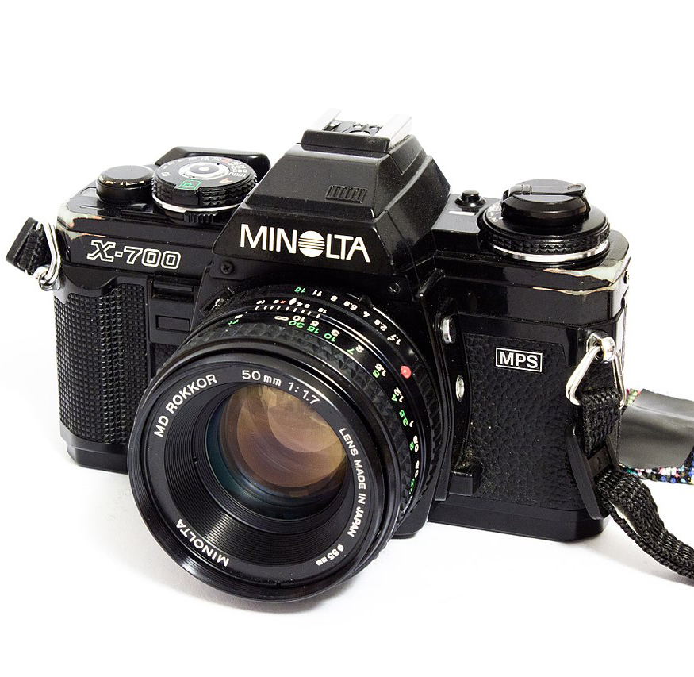

Minolta X-700 (a.k.a 조카)
Description
The Minolta X-700 is a 35 mm single-lens reflex film camera introduced by Minolta in 1981.
It was the top model of their final manual-focus SLR series before the introduction of
the auto-focus
Minolta Maxxum 7000.